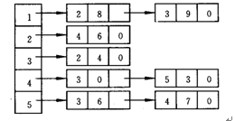

leetcode 207 课程表
题目
你这个学期必须选修 numCourse 门课程，记为 0 到 numCourse-1 。
在选修某些课程之前需要一些先修课程。 例如，想要学习课程 0 ，你需要先完成课程 1 ，我们用一个匹配来表示他们：[0,1]
给定课程总量以及它们的先决条件，请你判断是否可能完成所有课程的学习？
示例 1:
输入: 2, [[1,0]]
输出: true
解释: 总共有 2 门课程。学习课程 1 之前，你需要完成课程 0。所以这是可能的。示例 2:
输入: 2, [[1,0],[0,1]]
输出: false
解释: 总共有 2 门课程。学习课程 1 之前，你需要先完成课程 0；并且学习课程 0 之前，你还应先完成课程 1。这是不可能的。提示：
1. 输入的先决条件是由 边缘列表 表示的图形，而不是 邻接矩阵 。详情请参见图的表示法。 2. 你可以假定输入的先决条件中没有重复的边。 3. 1 <= numCourses <= 10^5
首先分析题目，先决条件就是要想学0，必须先学1，因此可以用一个有向图来表示课程关系。若此有向图为无环有向图，则存在一个拓扑序列满足这个先决条件。
尝试
一开始想用邻接矩阵与numpy库中的点乘来得到图的到达节点矩阵，但是dot()函数花费太大了，导致时间过长。
正解
邻接表
对图中的每个节点，用一个单向链表列出从该节点出发的所有弧，链表中每个单元对应一条出弧，单元中还可以包含弧上的权作为数据域。

DFS
对于一个节点 u，如果它的所有相邻节点都已经搜索完成，那么在搜索回溯到 u 的时候，u 本身也会变成一个已经搜索完成的节点。这里的「相邻节点」指的是从 u 出发通过一条有向边可以到达的所有节点。
对于图中的任意一个节点，它在搜索的过程中有三种状态，即：
「未搜索」：我们还没有搜索到这个节点；
「搜索中」：我们搜索过这个节点，但还没有回溯到该节点，即该节点还没有入栈，还有相邻的节点没有搜索完成）；
「已完成」：我们搜索过并且回溯过这个节点，即该节点已经入栈，并且所有该节点的相邻节点都出现在栈的更底部的位置，满足拓扑排序的要求。
通过上述的三种状态，我们就可以给出使用深度优先搜索得到拓扑排序的算法流程，在每一轮的搜索搜索开始时，我们任取一个「未搜索」的节点开始进行深度优先搜索。
我们将当前搜索的节点 u 标记为「搜索中」，遍历该节点的每一个相邻节点 v：
如果 v 为「未搜索」，那么我们开始搜索 v，待搜索完成回溯到 u；
如果 v 为「搜索中」，说明u这个点有一条到本次搜索上层点v的弧，则u，v互相都可以到达，因此该图存在弧。
如果 v 为「已完成」，那么说明 v 已经在栈中了，而 u 还不在栈中，因此 u 无论何时入栈都不会影响到 (u,v) 之前的拓扑关系，以及不用进行任何操作。
当 u 的所有相邻节点都为「已完成」时，我们将 u 放入栈中，并将其标记为「已完成」。
在整个深度优先搜索的过程结束后，如果我们没有找到图中的环，那么栈中存储这所有的 n 个节点，从栈顶到栈底的顺序即为一种拓扑排序。
1 | class Solution: |
入度表BFS
我们使用一个队列来进行广度优先搜索。初始时，所有入度为 000 的节点都被放入队列中，它们就是可以作为拓扑排序最前面的节点，并且它们之间的相对顺序是无关紧要的。
在广度优先搜索的每一步中，我们取出队首的节点 u：
我们将 u放入答案中；
我们移除 u 的所有出边，也就是将 u的所有相邻节点的入度减少 1。如果某个相邻节点 v 的入度变为 0，那么我们就将 v 放入队列中。
在广度优先搜索的过程结束后。如果答案中包含了这 n 个节点，那么我们就找到了一种拓扑排序，否则说明图中存在环，也就不存在拓扑排序了。
1 | from collections import deque |